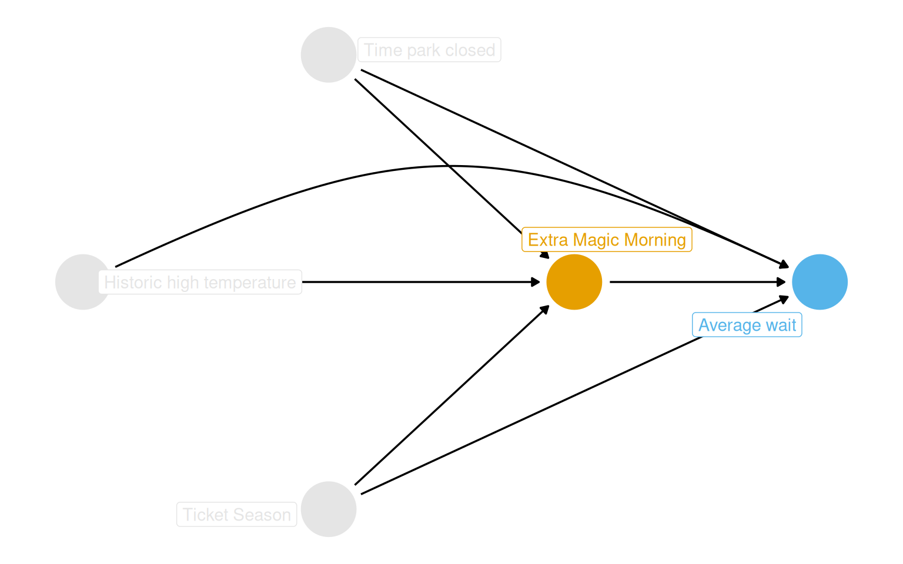
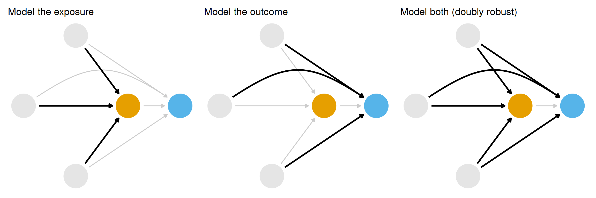
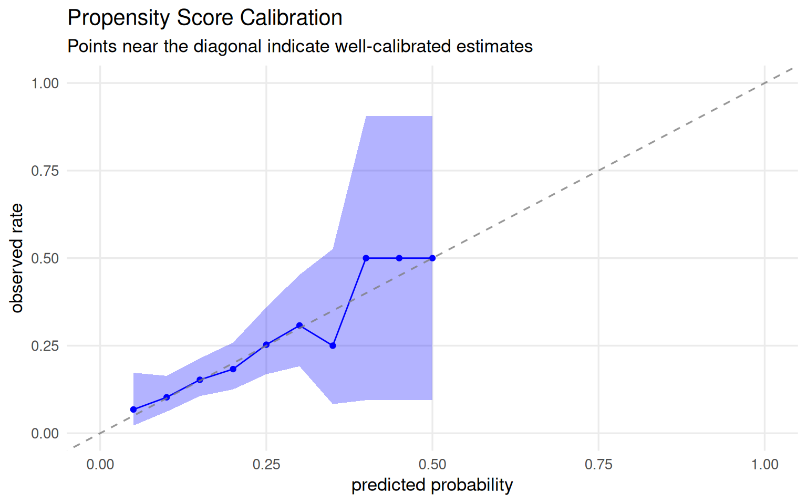
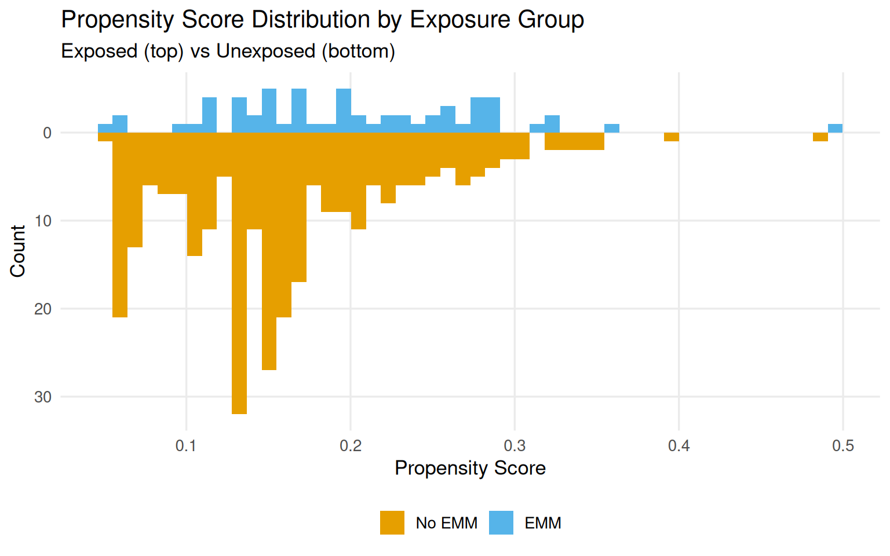
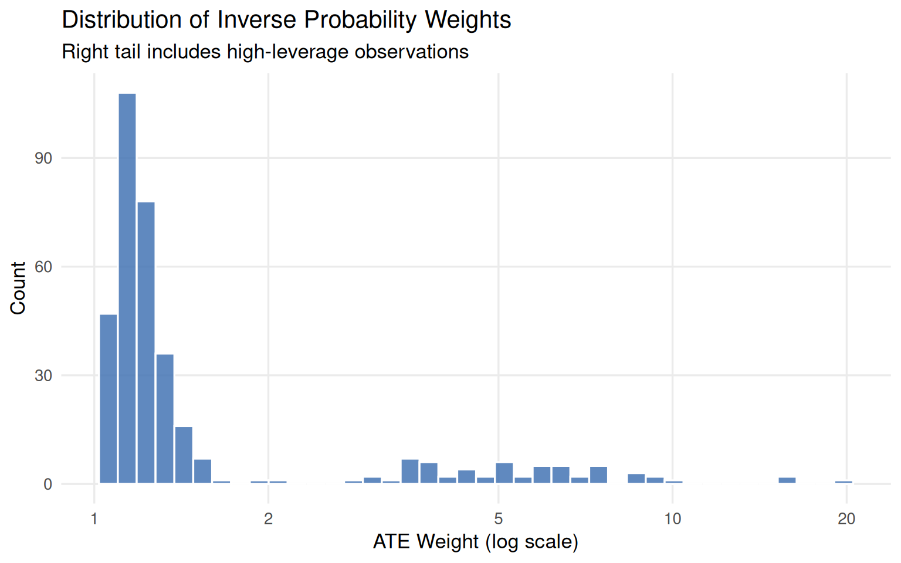
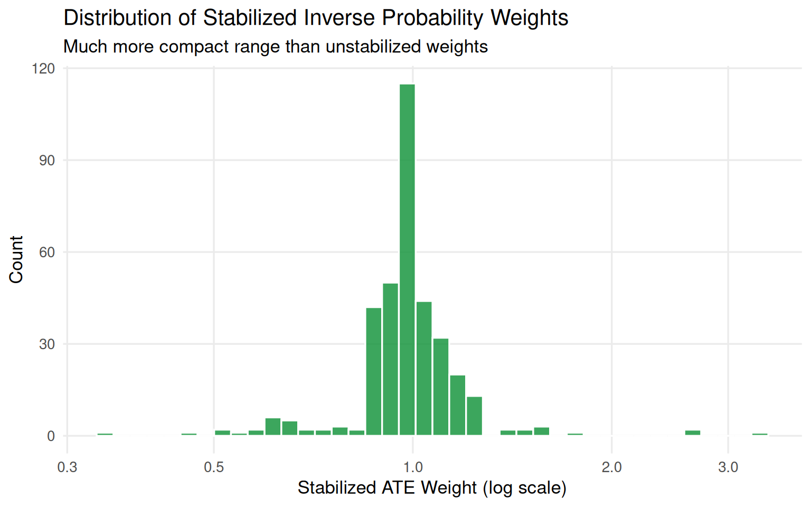
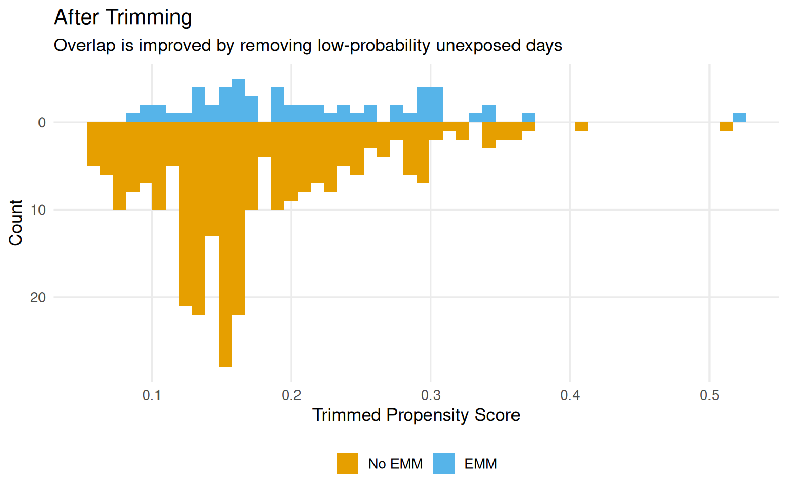
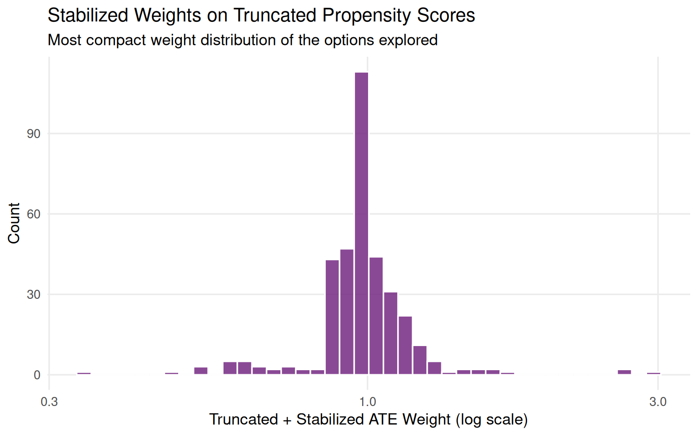

The question driving this chapter: does having Extra Magic Hours in the morning at Magic Kingdom affect average wait times for the Seven Dwarfs Mine Train between 9 and 10 AM in 2018?
From the DAG in Figure 9.1, three confounders require adjustment: historic high temperature, park closing time, and ticket season (value, regular, or peak). The question becomes how to close those backdoor paths. There are three broad strategies, illustrated in Figure 9.2: model the exposure (propensity score methods), model the outcome (outcome models), or model both (doubly robust estimators). This chapter works through the first of these.
The intuition behind propensity scores comes from randomized experiments. In a true randomized trial, every unit has a known probability of exposure. Because confounders no longer predict who gets treated, the groups are exchangeable. In observational data, no one assigned treatment that way, but someone decided which days got Extra Magic Hours. If the factors driving that decision can be recovered from domain knowledge and data, conditional exchangeability can be approximated.
Rosenbaum and Rubin (1983) showed that conditioning on the propensity score, defined as the probability of exposure given observed covariates, is sufficient to remove confounding, provided the standard causal assumptions hold.
Show code
coord_dag <-list(x =c(Season =0, close =0, weather =-1, x =1, y =2),y =c(Season =-1, close =1, weather =0, x =0, y =0))labels <-c(x ="Extra Magic Morning",y ="Average wait",Season ="Ticket Season",weather ="Historic high temperature",close ="Time park closed")dag <-dagify( y ~ x + close + Season + weather, x ~ weather + close + Season,coords = coord_dag,labels = labels,exposure ="x",outcome ="y") |>tidy_dagitty() |>node_status()dag_plot <- dag |>ggplot(aes(x, y, xend = xend, yend = yend, color = status)) +geom_dag_point() +scale_color_okabe_ito(na.value ="grey90") +theme_dag() +theme(legend.position ="none",plot.background =element_rect(fill ="white", color =NA) ) +coord_cartesian(clip ="off")dag_plot +geom_dag_edges_arc(curvature =c(rep(0, 5), .3, 0)) +geom_dag_label_repel(aes(label = label), seed =1630)

Figure 9.1: Proposed DAG for the Extra Magic Hours question. Ticket season, historic temperature, and park close time all affect both exposure and outcome.
Show code
p1 <- dag_plot +geom_dag_edges_arc(curvature =c(rep(0, 5), .3, 0), edge_color ="grey80") +geom_dag_edges_arc(data = \(.x) filter(.x, to =="x"),curvature =c(0, 0, 0),edge_width =1.1 ) +labs(title ="Model the exposure")p2 <- dag_plot +geom_dag_edges_arc(curvature =c(rep(0, 5), .3, 0), edge_color ="grey80") +geom_dag_edges_arc(data = \(.x) filter(.x, name !="x", to =="y"),curvature =c(0, 0, .3),edge_width =1.1 ) +labs(title ="Model the outcome")p3 <- dag_plot +geom_dag_edges_link(data = \(.x) filter(.x, name =="x", to =="y"),edge_color ="grey80" ) +geom_dag_edges_arc(data = \(.x) filter(.x, name !="x"),curvature =c(rep(0, 5), .3),edge_width =1.1 ) +labs(title ="Model both (doubly robust)")p1 + p2 + p3

Figure 9.2: Three strategies for closing backdoor paths: (left) model the exposure, (center) model the outcome, (right) model both. This chapter focuses on the left panel.
Building Propensity Score Models
The model
For binary exposures, logistic regression is the standard starting point. The exposure is the outcome being predicted; the confounders identified from the DAG are the predictors. The goal is well-calibrated probabilities, not prediction in the usual sense.
augment() from broom attaches the fitted probabilities (.fitted) back to the original data frame in one step, important because we need the outcome variable downstream, which would be dropped if we augmented without supplying data.
The first six rows of the resulting dataset are shown in Table 9.1. January 5 had a fitted probability of 18.4% but did receive Extra Magic Hours; January 1 had a 30.2% probability and did not. These “surprising” observations carry the most information for constructing counterfactuals.
Table 9.1: Propensity scores for the first six days. P(EMM) is the estimated probability of receiving Extra Magic Morning hours.
Propensity Score
Confounders
Date
Extra Magic Morning
P(EMM)
Ticket Season
Close Time
Historic Temp (F)
2018-01-01
0
0.302
peak
23:00:00
58.63
2018-01-02
0
0.282
peak
24:00:00
53.65
2018-01-03
0
0.290
peak
24:00:00
51.11
2018-01-04
0
0.188
regular
24:00:00
52.66
2018-01-05
1
0.184
regular
24:00:00
54.29
2018-01-06
0
0.207
regular
23:00:00
56.25
Calibration
A well-calibrated propensity score model behaves the way you expect: among all days with a predicted probability of 30%, roughly 30% should actually have Extra Magic Hours. Figure 9.3 shows the calibration plot. Points track close to the 45-degree line, which is reassuring. Logistic regression tends to be well-calibrated by construction. For machine learning models, poor calibration is more likely and can be corrected with ps_calibrate() from the propensity package.
Show code
plot_model_calibration(ps_mod, method ="windowed") +theme_minimal(base_size =13) +theme(plot.background =element_rect(fill ="white", color =NA),panel.grid.minor =element_blank() ) +labs(title ="Propensity Score Calibration",subtitle ="Points near the diagonal indicate well-calibrated estimates" )

Figure 9.3: Calibration plot for the propensity score model. Points near the 45-degree line indicate well-calibrated probability estimates.
Discrimination (ROC/AUC)
The ROC curve measures discrimination: how well the model separates days with Extra Magic Hours from days without. An AUC of 0.5 means no better than chance; an AUC of 1.0 means perfect separation.
In prediction contexts, you want AUC as high as possible. In causal inference, perfect discrimination would signal a positivity violation, and some days would have zero probability of treatment. An AUC somewhere between 0.6 and 0.8 tends to indicate that the model has picked up enough signal from confounders to be useful without creating extreme overlap problems. This is diagnostic, not a target to optimize.
Figure 9.4: ROC curve for the propensity score model. AUC = 0.65, in the range that suggests useful confounding signal without severe positivity concerns.
Causal assumptions in the propensity score distribution
Mirrored histograms split the propensity score distribution by exposure group: exposed days on top, unexposed on the bottom. They let you read off two key properties:
Overlap (common support): Do the score ranges overlap between groups? Gaps signal potential positivity violations.
Balance: Are the distributions similar in shape? Systematic shape differences suggest the groups are not exchangeable.
Figure 9.5 shows these distributions for the Magic Kingdom data. There are shape differences and more days in the unexposed group at low probability values. The raw ranges per group are close:
Only one exposed day falls above the unexposed maximum, and no unexposed day falls below the exposed minimum. But the left tail, days with propensity scores below 10%, is almost entirely unexposed, which means that part of the confounder space has very few exposed days:
Some of this sparsity may be structural: Disney may simply never schedule Extra Magic Hours on certain types of days. That distinction matters, a stochastic positivity violation (bad luck in small samples) can sometimes be addressed methodologically, but a structural violation means the counterfactual genuinely does not exist.
Show code
ggplot( seven_dwarfs_9_with_ps,aes(.fitted, fill =factor(park_extra_magic_morning))) +geom_mirror_histogram(bins =50) +scale_y_continuous(labels = abs) +scale_fill_okabe_ito(labels =c("No EMM", "EMM")) +theme_minimal(base_size =13) +theme(legend.position ="bottom",plot.background =element_rect(fill ="white", color =NA),panel.grid.minor =element_blank() ) +labs(x ="Propensity Score",y ="Count",fill =NULL,title ="Propensity Score Distribution by Exposure Group",subtitle ="Exposed (top) vs Unexposed (bottom)" )

Figure 9.5: Mirrored histograms of estimated propensity scores. Exposed days (top) and unexposed days (bottom) show meaningful shape differences, particularly in the left tail.
Figure 9.6 shows simulated examples of good, moderate, and poor overlap and balance. These serve as a reference for judging what the actual data look like.
Figure 9.6: Simulated propensity score distributions for good, moderate, and poor overlap (top row) and balance (bottom row). The actual data fall in the poor-to-moderate range on both dimensions.
Using the Propensity Score
The propensity score is a balancing score. It summarizes confounders into a single number, and methods that condition on it can produce exchangeable exposure groups. Two main approaches do this through different mechanisms:
Matching creates a sub-population by pairing exposed and unexposed observations with similar scores.
Weighting creates a pseudo-population by up-weighting observations that are informative counterfactuals.
Matching
The ideal is exact matching: for each exposed unit, find an unexposed unit with identical confounder values. In practice, the curse of dimensionality makes exact matching infeasible with many continuous confounders. The propensity score reduces that multi-dimensional problem to a one-dimensional one.
1:1 Nearest neighbor matching
matchit() from the MatchIt package performs nearest-neighbor matching on the propensity score. All 60 days with Extra Magic Hours are kept; for each, one comparable unexposed day is found. The default estimand is ATT (average treatment effect among the treated), more on that in Chapter 10.
The matched dataset has 120 rows: 60 pairs. The subclass column identifies pairs. Pair 1 matched two regular-season days with similar propensity scores, slightly different temperatures:
Table 9.3: Subclass 45: a less precise match. Both days are regular season, but temperatures differ by roughly 20 degrees.
Date
EMM
P(EMM)
Temp (F)
Ticket Season
Close Time
2018-11-16
1
0.360
64.5
regular
18:00:00
2018-11-05
0
0.349
83.9
regular
16:30:00
234 unexposed days were discarded. That information loss is the main limitation of matching.
1:k matching and the bias-variance tradeoff
Using ratio = 2 recovers some statistical power by finding two matches per exposed day (180 observations instead of 120). But with a fixed pool of unexposed days, more matches means worse matches. The fourth match for pair 1 already has a noticeably lower propensity score than the original. This is a classic bias-variance tradeoff: more matches, better precision, potentially more bias.
Calipers
A caliper sets a maximum allowable distance between matched pairs (scaled by the SD of the propensity score). Setting caliper = 0.2 with ratio = 2 yields 178 days rather than 180, two exposed observations could only find one acceptable match:
# A tibble: 2 × 2
subclass n
<fct> <int>
1 17 2
2 50 2
Population change warning
Calipers, trimming, and truncation can all shift the population you are studying. If observations are dropped, the ATT applies to a narrower group than intended. Chapter 10 works through these estimand implications.
Weighting
Matching uses a crude binary weight: matched observations get 1, unmatched get 0. Weighting replaces that with smooth, continuous weights that let every observation contribute to the analysis.
Inverse probability weights (ATE)
The ATE weight gives each observation a weight equal to the inverse probability of receiving the exposure it actually got:
\[w_{ATE} = \frac{X}{p} + \frac{(1 - X)}{1 - p}\]
A day that looked highly unlikely to receive Extra Magic Hours (\(p = 0.06\)) but did gets a large weight, it is a good counterfactual for the many days that did not, so it “counts for more.”
Table 9.4 shows the weights for the first six days. January 5 (EMM = 1, P(EMM) = 0.18) gets a weight of 5.4. January 1 (EMM = 0, P(EMM) = 0.30) gets 1.4, it is unsurprising that it had no EMM, so it contributes less.
Table 9.4: First six rows with ATE weights attached. The weight reflects how unexpected each day’s observed exposure status was.
Date
EMM
Ticket Season
Close Time
Temp (F)
P(EMM)
ATE Weight
2018-01-01
0
peak
23:00:00
58.63
0.302
1.433
2018-01-02
0
peak
24:00:00
53.65
0.282
1.392
2018-01-03
0
peak
24:00:00
51.11
0.290
1.408
2018-01-04
0
regular
24:00:00
52.66
0.188
1.232
2018-01-05
1
regular
24:00:00
54.29
0.184
5.432
2018-01-06
0
regular
23:00:00
56.25
0.207
1.262
Extreme weights
The ATE weight has a lower bound of 1 but no upper bound. Days with very low predicted probabilities that nonetheless received treatment get very large weights, adding variance. Figure 9.7 shows the weight distribution, several days exceed a weight of 10.
Show code
seven_dwarfs_9_with_wt |>ggplot(aes(as.numeric(w_ate))) +geom_histogram(bins =40, fill ="#4575b4", color ="white", alpha =0.85) +scale_x_log10(breaks =c(1, 2, 5, 10, 20)) +theme_minimal(base_size =13) +theme(plot.background =element_rect(fill ="white", color =NA),panel.grid.minor =element_blank() ) +labs(x ="ATE Weight (log scale)",y ="Count",title ="Distribution of Inverse Probability Weights",subtitle ="Right tail includes high-leverage observations" )

Figure 9.7: Distribution of ATE weights (log scale). The right tail contains several very high-weight observations that can destabilize the analysis.
Four days carry weights above 10 (Table 9.5), all in the value ticket season with warm temperatures. April 27 effectively counts as almost 20 days in the analysis.
Table 9.5: Days with ATE weights exceeding 10. All fall in the value ticket season with higher temperatures, a region with very few exposed days.
Date
EMM
Ticket Season
Close Time
Temp (F)
P(EMM)
ATE Weight
2018-01-26
1
value
20:00:00
73.2
0.0987
10.13
2018-02-09
1
value
22:00:00
81.5
0.0626
15.97
2018-03-02
1
value
22:00:00
81.3
0.0628
15.92
2018-04-27
1
value
23:00:00
84.3
0.0506
19.77
Stabilized weights
Stabilization divides the ATE weight by the marginal proportion of exposed and unexposed units. This shrinks the weight range without introducing bias, and it makes the pseudo-population the same size as the original (weights average to 1).
# A tibble: 1 × 5
mean min max n sum
<dbl> <dbl> <dbl> <int> <dbl>
1 1.00 0.342 3.35 354 355.
Show code
seven_dwarfs_9_with_wt |>ggplot(aes(stbl_wts)) +geom_histogram(bins =40, fill ="#1a9641", color ="white", alpha =0.85) +scale_x_log10(breaks =c(0.3, 0.5, 1, 2, 3)) +theme_minimal(base_size =13) +theme(plot.background =element_rect(fill ="white", color =NA),panel.grid.minor =element_blank() ) +labs(x ="Stabilized ATE Weight (log scale)",y ="Count",title ="Distribution of Stabilized Inverse Probability Weights",subtitle ="Much more compact range than unstabilized weights" )

Figure 9.8: Stabilized ATE weight distribution. The maximum drops from roughly 20 to around 3, and the mean is 1.
Trimming and truncation
Two additional tools address extreme weights and positivity violations:
Trimming drops observations that fall outside an acceptable propensity score range, then refits the model on the retained data. Fewer observations, but the remaining fits are better.
Truncation (also called Winsorizing) does not drop anyone; instead, it forces extreme propensity score values to the boundary of the acceptable range. Everyone stays, but their scores are modified.
Be aware that different authors use these terms interchangeably or sometimes with reversed meanings. Be explicit when reporting which approach you used.
36 observations were trimmed, all in the value ticket season with warm temperatures and later closing times. These are exactly the days where structural positivity violations are plausible (Table 9.6). The distributions after trimming and truncation are shown in Figure 9.9 and Figure 9.10.
Table 9.6: Covariates of trimmed observations (first 10 rows). All value-season days, mostly warm, with later closing times - a profile that may structurally prevent Extra Magic Hours.
Ticket Season
Close Time
Historic Temp (F)
value
22:00:00
74.6
value
22:00:00
81.5
value
22:00:00
86.4
value
22:00:00
81.1
value
21:00:00
85.0
value
22:00:00
81.3
value
23:00:00
73.1
value
22:00:00
83.1
value
22:00:00
81.0
value
22:00:00
81.8
Show code
ggplot( seven_dwarfs_9_with_wt,aes(trimmed_ps, fill =factor(park_extra_magic_morning))) +geom_mirror_histogram(bins =50) +scale_y_continuous(labels = abs) +scale_fill_okabe_ito(labels =c("No EMM", "EMM")) +theme_minimal(base_size =13) +theme(legend.position ="bottom",plot.background =element_rect(fill ="white", color =NA),panel.grid.minor =element_blank() ) +labs(x ="Trimmed Propensity Score",y ="Count",fill =NULL,title ="After Trimming",subtitle ="Overlap is improved by removing low-probability unexposed days" )

Figure 9.9: Propensity score distributions after adaptive trimming. The left tail of the unexposed group is removed, improving overlap.
Figure 9.10: Propensity score distributions after truncation to the 1st percentile. No observations are removed, but extreme values are forced to the boundary.
Truncation and stabilization can be combined. Figure 9.11 shows the resulting weight distribution is more compact than either approach alone.
Show code
seven_dwarfs_9_with_wt <- seven_dwarfs_9_with_wt |>mutate(trunc_stbl_wt =wt_ate( trunc_ps, park_extra_magic_morning,stabilize =TRUE ))seven_dwarfs_9_with_wt |>ggplot(aes(trunc_stbl_wt)) +geom_histogram(bins =40, fill ="#762a83", color ="white", alpha =0.85) +scale_x_log10() +theme_minimal(base_size =13) +theme(plot.background =element_rect(fill ="white", color =NA),panel.grid.minor =element_blank() ) +labs(x ="Truncated + Stabilized ATE Weight (log scale)",y ="Count",title ="Stabilized Weights on Truncated Propensity Scores",subtitle ="Most compact weight distribution of the options explored" )

Figure 9.11: Distribution of stabilized weights computed on the truncated propensity score. The combination gives the most compact weight distribution.
Matching vs Weighting: When to Use Each
Both methods aim to create balanced groups, but they get there differently. Here is a quick comparison:
Table 9.7: Matching vs weighting: a practical comparison.
Criterion
Matching
Weighting
Statistical efficiency
Lower (many observations dropped)
Higher (all observations contribute)
Interpretability
High (concrete paired comparisons)
Lower (pseudo-population is abstract)
Sample retention
Lower (only matched units used)
Higher (all units retained)
Handles positivity violations
Via caliper
Via trimming/truncation
Best when...
Stakeholder communication matters
Data are limited; statistical power matters
The book recommends weighting as the default. Matching is worth it when the analysis needs to be explained to an audience unfamiliar with pseudo-populations.
Key Takeaways
The propensity score is the probability of exposure given observed covariates. In a randomized trial, it is known. In observational data, it is estimated typically with logistic regression and then used to adjust for confounding.
Once fitted, the propensity score feeds into two families of methods. Matching pairs each exposed unit with one or more unexposed units nearby in propensity score space. Weighting uses the propensity score to calculate inverse probability weights that up-weight informative counterfactuals. Both approaches aim to produce exchangeable groups.
Two diagnostics come before any adjustment: calibration (are the predicted probabilities trustworthy?) and AUC (has the model picked up enough confounding signal without creating positivity problems?). After adjustment, balance diagnostics covered in Chapter 9 tell you whether the method worked.
Extreme weights signal positivity problems. Stabilization helps by reducing the weight spread. Trimming and truncation address positivity more directly: trimming removes observations in regions without common support; truncation forces extreme propensity scores to the boundary. Both narrow the population to one where causal inference is more credible, which is worth keeping in mind when interpreting results.